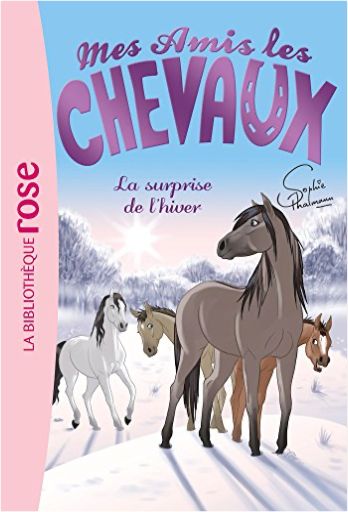
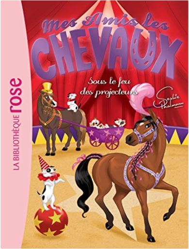

Books
Movies
Albums
Videogames
Games
BD
BD Camille
Blu-ray
Business
Camille
Comics
Cooking
Lego
Manga
Pauline
Photography
Star Wars
T'choupi
Travel
TV Shows
Un livre dont vous êtes le héro
Vinyl
Walt Disney
75
76
77
78
79
Mes Amis les chevaux 28 - Un invité surprise
sophie thalmann
Mes amis les chevaux 32 - Duel de champions
sophie thalmann
mes amis les chevaux, tome 1 - un nouveau pensionnaire
sophie thalmann
mes amis les chevaux, tome 2 - la grande compétition
sophie thalmann
mes amis les chevaux, tome 3 : un choix difficile
sophie thalmann
mes amis les chevaux, tome 4 - un rival inattendu
sophie thalmann
mes amis les chevaux, tome 5 - une randonnée mouvementée
sophie thalmann
mes amis les chevaux, tome 6 : une rencontre inoubliable
sophie thalmann

mes amis les chevaux, tome 7 - la surprise de l'hiver
sophie thalmann
mes amis les chevaux, tome 8 : le loup solitaire
sophie thalmann

mes amis les chevaux, tome 9 : sous le feu des projecteurs
sophie thalmann
mes amis les chevaux, tome 10 - le concours de beauté
sophie thalmann
75
76
77
78
79


 Made with Delicious Library Made with Delicious Library
Made with Delicious Library Made with Delicious Library